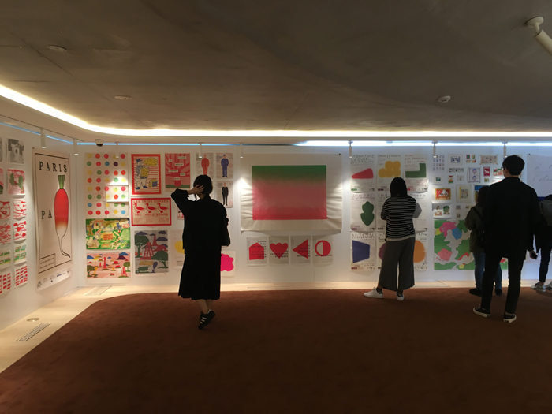

04
Field Trip - 서울시립미술관, 한남동 KUHO
자율진화도시는 도시 건설에 대한 이야기를 도교적으로 풀어냈다는 점이 약간 흥미로웠다. 전시 내용도
도시를 일종의 '자연'으로 보고 풀어나가는 방식이었는데, 다만 세종시와 송도 같은 계획도시를 자율진화도시의 예로 칭한
점은 이해하기 힘들었다.
한남동 KUHO의 Paul Cox전은 전시 장소와 잘 어울리는 전시였다. Paul Cox의 작품에서는 자유분방함과 여유가 느껴졌다. 팔랑거리는 종이에 찍힌 작품들이 하얀 천장과 벽 사이로 정갈하고 복잡하게 나열되어
있는 모습은
전시의 이름 "MISCELLANEA"와 정말 잘 어울렸다.
